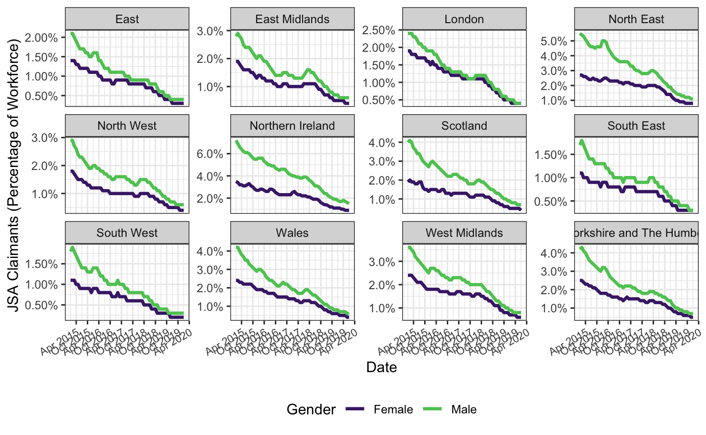

../docs/vignettes/introduction.Rmd
introduction.Rmdnomisr is for accessing Nomis data with R. The Nomis API is free to access without registration, and contains up-to-date official statistics, including data from the Census, the Labour Force Survey, DWP benefit statistics and other economic and demographic data. Nomis is maintained on behalf of the Office for National Statistics by the University of Durham.
There is a lot of data available through Nomis, and there are some limits to the amount of data that can be retrieved within a certain period of time, although those are not published. For more details, see the full API documentation from Nomis.
Nomis data is based around administrative and statistical geographies, and a particular geography should be specified when downloading data.
nomisr is designed around a pipeline of three key functions: nomis_data_info(), nomis_get_metadata() and nomis_get_data(). The nomis_overview(), nomis_content_type() and nomis_search() functions can assist with this.
The nomis_data_info() function is focused on the structure and coverage of the available datasets.
Use the nomis_data_info() function without any parameters to get a tibble with metadata for all available datasets:
library(nomisr)
x <- nomis_data_info()
head(x)## # A tibble: 6 x 14
## agencyid id uri version annotations.annotation components.attribute
## <chr> <chr> <chr> <dbl> <list> <list>
## 1 NOMIS NM_1_1 Nm-1d1 1 <df[,2] [10 × 2]> <df[,4] [7 × 4]>
## 2 NOMIS NM_2_1 Nm-2d1 1 <df[,2] [6 × 2]> <df[,4] [7 × 4]>
## 3 NOMIS NM_4_1 Nm-4d1 1 <df[,2] [8 × 2]> <df[,4] [7 × 4]>
## 4 NOMIS NM_5_1 Nm-5d1 1 <df[,2] [5 × 2]> <df[,4] [7 × 4]>
## 5 NOMIS NM_6_1 Nm-6d1 1 <df[,2] [6 × 2]> <df[,4] [7 × 4]>
## 6 NOMIS NM_7_1 Nm-7d1 1 <df[,2] [6 × 2]> <df[,4] [7 × 4]>
## # … with 8 more variables: components.dimension <list>,
## # components.primarymeasure.conceptref <chr>,
## # components.timedimension.codelist <chr>,
## # components.timedimension.conceptref <chr>, description.value <chr>,
## # description.lang <chr>, name.value <chr>, name.lang <chr>nomis_data_info() can also be used to query metadata from a specific dataset, using its ID. The example below uses the “LC4408EW - Tenure by number of persons per bedroom in household by household type” dataset from the 2011 census, which has the ID “NM_893_1”.
y <- nomis_data_info("NM_893_1")
tibble::glimpse(y)## Rows: 1
## Columns: 12
## $ agencyid <chr> "NOMIS"
## $ id <chr> "NM_893_1"
## $ uri <chr> "Nm-893d1"
## $ version <dbl> 1
## $ annotations.annotation <list> [<data.frame[14 x 2]>]
## $ components.attribute <list> [<data.frame[7 x 4]>]
## $ components.dimension <list> [<data.frame[6 x 3]>]
## $ components.primarymeasure.conceptref <chr> "OBS_VALUE"
## $ components.timedimension.codelist <chr> "CL_893_1_TIME"
## $ components.timedimension.conceptref <chr> "TIME"
## $ name.value <chr> "LC4408EW - Tenure by number of p…
## $ name.lang <chr> "en"When a tibble with metadata for all datasets or a specific dataset is returned, three of the columns, annotations.annotation, components.attribute and components.dimension, are list-columns of data frames. annotations.annotation contains metadata on the dataset, including units and current status. components.attribute contains more detailed status metadata. components.dimension contains the grouping and summary variables available in the dataset, which vary between different datasets.
The example below shows how to access data stored in list columns returned from the Nomis API. In the case of requests for metadata from a single dataset, the three columns are all lists with a length of 1. If requesting all dataset information with nomis_data_info(), each row is a list of length 1. Each list contains a data.frame, of varrying dimensions depending on the column and dataset. You can unnest individual list-columns to display their data in the same row as data from the rest of the tibble. Due to the differing lengths of the list-columns returned by nomis_data_info(), only one list-column can be unnested at a time.
## [1] "list"
y$annotations.annotation %>% length()## [1] 1
y$annotations.annotation[[1]] %>% class()## [1] "data.frame"## [1] "list"## [1] "data.frame"## [1] "list"## Rows: 14
## Columns: 13
## $ agencyid <chr> "NOMIS", "NOMIS", "NOMIS", "NOMIS…
## $ id <chr> "NM_893_1", "NM_893_1", "NM_893_1…
## $ uri <chr> "Nm-893d1", "Nm-893d1", "Nm-893d1…
## $ version <dbl> 1, 1, 1, 1, 1, 1, 1, 1, 1, 1, 1, …
## $ annotationtext <chr> "Current (being actively updated)…
## $ annotationtitle <chr> "Status", "Keywords", "Units", "c…
## $ components.attribute <list> [<data.frame[7 x 4]>], [<data.fr…
## $ components.dimension <list> [<data.frame[6 x 3]>], [<data.fr…
## $ components.primarymeasure.conceptref <chr> "OBS_VALUE", "OBS_VALUE", "OBS_VA…
## $ components.timedimension.codelist <chr> "CL_893_1_TIME", "CL_893_1_TIME",…
## $ components.timedimension.conceptref <chr> "TIME", "TIME", "TIME", "TIME", "…
## $ name.value <chr> "LC4408EW - Tenure by number of p…
## $ name.lang <chr> "en", "en", "en", "en", "en", "en…nomisr also contains the nomis_search() function to search for datasets on particular topics. nomis_search() can be used to search in one or more of dataset names, descriptions, keywords, content type and units. If using multiple parameters, nomis_search() will return information on all datasets that match one or more parameters. Character vectors of strings can be used in searches, and likewise nomis_search() will return information on datasets that match one or more queries. The * is used as a wildcard symbol. nomis_search() returns metadata in the same format as nomis_data_info(), including using list-columns. The nomis_content_type() function can assist in identifying content type IDs for nomis_search().
a <- nomis_search(name = '*jobseekers*', keywords = 'Claimants')
tibble::glimpse(a)## Rows: 33
## Columns: 14
## $ agencyid <chr> "NOMIS", "NOMIS", "NOMIS", "NOMIS…
## $ id <chr> "NM_1_1", "NM_2_1", "NM_6_1", "NM…
## $ uri <chr> "Nm-1d1", "Nm-2d1", "Nm-6d1", "Nm…
## $ version <dbl> 1, 1, 1, 1, 1, 1, 1, 1, 1, 1, 1, …
## $ annotations.annotation <list> [<data.frame[10 x 2]>], [<data.f…
## $ components.attribute <list> [<data.frame[7 x 4]>], [<data.fr…
## $ components.dimension <list> [<data.frame[5 x 3]>], [<data.fr…
## $ components.primarymeasure.conceptref <chr> "OBS_VALUE", "OBS_VALUE", "OBS_VA…
## $ components.timedimension.codelist <chr> "CL_1_1_TIME", "CL_2_1_TIME", "CL…
## $ components.timedimension.conceptref <chr> "TIME", "TIME", "TIME", "TIME", "…
## $ description.value <chr> "Records the number of people cla…
## $ description.lang <chr> "en", "en", "en", "en", NA, "en",…
## $ name.value <chr> "Jobseeker's Allowance with rates…
## $ name.lang <chr> "en", "en", "en", "en", "en", "en…## Rows: 231
## Columns: 17
## $ agencyid <chr> "NOMIS", "NOMIS", "NOMIS", "NOMIS…
## $ id <chr> "NM_1_1", "NM_1_1", "NM_1_1", "NM…
## $ uri <chr> "Nm-1d1", "Nm-1d1", "Nm-1d1", "Nm…
## $ version <dbl> 1, 1, 1, 1, 1, 1, 1, 1, 1, 1, 1, …
## $ annotations.annotation <list> [<data.frame[10 x 2]>], [<data.f…
## $ assignmentstatus <chr> "Mandatory", "Conditional", "Cond…
## $ attachmentlevel <chr> "Observation", "Observation", "Ob…
## $ codelist <chr> "CL_OBS_STATUS", "CL_OBS_CONF", "…
## $ conceptref <chr> "OBS_STATUS", "OBS_CONF", "OBS_RO…
## $ components.dimension <list> [<data.frame[5 x 3]>], [<data.fr…
## $ components.primarymeasure.conceptref <chr> "OBS_VALUE", "OBS_VALUE", "OBS_VA…
## $ components.timedimension.codelist <chr> "CL_1_1_TIME", "CL_1_1_TIME", "CL…
## $ components.timedimension.conceptref <chr> "TIME", "TIME", "TIME", "TIME", "…
## $ description.value <chr> "Records the number of people cla…
## $ description.lang <chr> "en", "en", "en", "en", "en", "en…
## $ name.value <chr> "Jobseeker's Allowance with rates…
## $ name.lang <chr> "en", "en", "en", "en", "en", "en…
b <- nomis_search(keywords = c('Claimants', '*Year*'))
tibble::glimpse(b)## Rows: 85
## Columns: 14
## $ agencyid <chr> "NOMIS", "NOMIS", "NOMIS", "NOMIS…
## $ id <chr> "NM_1_1", "NM_2_1", "NM_5_1", "NM…
## $ uri <chr> "Nm-1d1", "Nm-2d1", "Nm-5d1", "Nm…
## $ version <dbl> 1, 1, 1, 1, 1, 1, 1, 1, 1, 1, 1, …
## $ annotations.annotation <list> [<data.frame[10 x 2]>], [<data.f…
## $ components.attribute <list> [<data.frame[7 x 4]>], [<data.fr…
## $ components.dimension <list> [<data.frame[5 x 3]>], [<data.fr…
## $ components.primarymeasure.conceptref <chr> "OBS_VALUE", "OBS_VALUE", "OBS_VA…
## $ components.timedimension.codelist <chr> "CL_1_1_TIME", "CL_2_1_TIME", "CL…
## $ components.timedimension.conceptref <chr> "TIME", "TIME", "TIME", "TIME", "…
## $ description.value <chr> "Records the number of people cla…
## $ description.lang <chr> "en", "en", "en", "en", "en", NA,…
## $ name.value <chr> "Jobseeker's Allowance with rates…
## $ name.lang <chr> "en", "en", "en", "en", "en", "en…## Rows: 595
## Columns: 17
## $ agencyid <chr> "NOMIS", "NOMIS", "NOMIS", "NOMIS…
## $ id <chr> "NM_1_1", "NM_1_1", "NM_1_1", "NM…
## $ uri <chr> "Nm-1d1", "Nm-1d1", "Nm-1d1", "Nm…
## $ version <dbl> 1, 1, 1, 1, 1, 1, 1, 1, 1, 1, 1, …
## $ annotations.annotation <list> [<data.frame[10 x 2]>], [<data.f…
## $ assignmentstatus <chr> "Mandatory", "Conditional", "Cond…
## $ attachmentlevel <chr> "Observation", "Observation", "Ob…
## $ codelist <chr> "CL_OBS_STATUS", "CL_OBS_CONF", "…
## $ conceptref <chr> "OBS_STATUS", "OBS_CONF", "OBS_RO…
## $ components.dimension <list> [<data.frame[5 x 3]>], [<data.fr…
## $ components.primarymeasure.conceptref <chr> "OBS_VALUE", "OBS_VALUE", "OBS_VA…
## $ components.timedimension.codelist <chr> "CL_1_1_TIME", "CL_1_1_TIME", "CL…
## $ components.timedimension.conceptref <chr> "TIME", "TIME", "TIME", "TIME", "…
## $ description.value <chr> "Records the number of people cla…
## $ description.lang <chr> "en", "en", "en", "en", "en", "en…
## $ name.value <chr> "Jobseeker's Allowance with rates…
## $ name.lang <chr> "en", "en", "en", "en", "en", "en…nomis_overview() returns a tibble with a generalised overview of a given dataset.
q <- nomis_overview("NM_1650_1")
q %>% tidyr::unnest(name) %>% glimpse()## Rows: 20
## Columns: 2
## $ name <chr> "analyses", "analysisname", "analysisnumber", "contact", "conten…
## $ value <list> [[<data.frame[3 x 3]>]], "output data for a single date or rang…nomis_overview() has a select parameter that can be used to select only particular elements of the overview to return.
s <- nomis_overview("NM_1650_1", select = c("units", "keywords"))
s %>% tidyr::unnest(name) %>% glimpse()## Rows: 3
## Columns: 2
## $ name <chr> "id", "keywords", "units"
## $ value <list> "NM_1650_1", "Year last worked", [["Persons"]]Vast amounts of data are available through Nomis and so to avoid overwhelming the API, it is good practice to query what concepts are available, using nomis_get_metadata(). While the other metadata functions can return concept metadata, nomis_get_metadata() provides greater flexibility and specificity over the returned metadata than nomis_overview() and nomis_data_info().
The example below queries some of the metadata available through the API for the “LC4408EW - Tenure bynumber of persons per bedroom in household by household type” dataset.
If provided with just a dataset ID, nomis_get_metadata() will return the concepts available for the given dataset.
a <- nomis_get_metadata(id = "NM_893_1")
print(a)## # A tibble: 7 x 3
## codelist conceptref isfrequencydimension
## <chr> <chr> <chr>
## 1 CL_893_1_GEOGRAPHY GEOGRAPHY false
## 2 CL_893_1_C_TENHUK11 C_TENHUK11 false
## 3 CL_893_1_C_PPBROOMHEW11 C_PPBROOMHEW11 false
## 4 CL_893_1_C_AHTHUK11 C_AHTHUK11 false
## 5 CL_893_1_MEASURES MEASURES false
## 6 CL_893_1_FREQ FREQ true
## 7 CL_893_1_TIME TIME falseIf provided with a concept name it returns the available values for that concept. However, in some cases, espescially with the geography concept, there are multiple options available, which Nomis labels types. In that case nomis_get_metadata() returns the values of the lowest indexed type available.
b <- nomis_get_metadata(id = "NM_893_1", concept = "GEOGRAPHY")
print(b)## # A tibble: 3 x 4
## id parentCode label.en description.en
## <chr> <chr> <chr> <chr>
## 1 2092957703 <NA> England and Wales England and Wales
## 2 2092957699 <NA> England England
## 3 2092957700 2092957700 Wales WalesWe can now pass a generic “type” string to the type parameter in nomis_get_metadata(), which returns all available geography types for dataset “NM_893_1”.
c <- nomis_get_metadata(id = "NM_893_1", concept = "geography", type = "type")
print(c)## # A tibble: 22 x 3
## id label.en description.en
## <chr> <chr> <chr>
## 1 TYPE265 NHS area teams NHS area teams
## 2 TYPE266 clinical commissioning groups clinical commissioning groups
## 3 TYPE267 built-up areas including subdivi… built-up areas including subdivisi…
## 4 TYPE269 built-up areas built-up areas
## 5 TYPE273 national assembly for wales elec… national assembly for wales electo…
## 6 TYPE274 postcode areas postcode areas
## 7 TYPE275 postcode districts postcode districts
## 8 TYPE276 postcode sectors postcode sectors
## 9 TYPE277 national assembly for wales cons… national assembly for wales consti…
## 10 TYPE279 parishes 2011 parishes 2011
## # … with 12 more rowsPassing a specific type to the type parameter, in this case “TYPE460” for all post-2010 parliamentary constituencies, returns a tibble with geographic codes for those specific constituencies, which can be used to filter queries.
d <- nomis_get_metadata(id = "NM_893_1", concept = "geography", type = "TYPE460")
print(d)## # A tibble: 573 x 4
## id parentCode label.en description.en
## <chr> <chr> <chr> <chr>
## 1 1929379865 2013265921 Berwick-upon-Tweed Berwick-upon-Tweed
## 2 1929379880 2013265921 Bishop Auckland Bishop Auckland
## 3 1929379885 2013265921 Blaydon Blaydon
## 4 1929379886 2013265921 Blyth Valley Blyth Valley
## 5 1929379952 2013265921 City of Durham City of Durham
## 6 1929379969 2013265921 Darlington Darlington
## 7 1929379988 2013265921 Easington Easington
## 8 1929380020 2013265921 Gateshead Gateshead
## 9 1929380044 2013265921 Hartlepool Hartlepool
## 10 1929380057 2013265921 Hexham Hexham
## # … with 563 more rowsThe vast majority (98% as of February 2018) of Nomis datasets include a geographic variable.
Using the information above, we can now query the latest data on bedroom occupancy per household type in different NHS clinical commissioning groups.
z <- nomis_get_data(id = "NM_893_1", time = "latest", geography = "TYPE266")##
## ── Column specification ────────────────────────────────────────────────────────
## cols(
## .default = col_double(),
## DATE_TYPE = col_character(),
## GEOGRAPHY_NAME = col_character(),
## GEOGRAPHY_CODE = col_character(),
## GEOGRAPHY_TYPE = col_character(),
## C_TENHUK11_NAME = col_character(),
## C_TENHUK11_CODE = col_character(),
## C_TENHUK11_TYPE = col_character(),
## C_PPBROOMHEW11_NAME = col_character(),
## C_PPBROOMHEW11_CODE = col_character(),
## C_PPBROOMHEW11_TYPE = col_character(),
## C_AHTHUK11_NAME = col_character(),
## C_AHTHUK11_CODE = col_character(),
## C_AHTHUK11_TYPE = col_character(),
## MEASURES_NAME = col_character(),
## OBS_STATUS = col_character(),
## OBS_STATUS_NAME = col_character(),
## OBS_CONF = col_logical(),
## OBS_CONF_NAME = col_character(),
## URN = col_character()
## )
## ℹ Use `spec()` for the full column specifications.
print(z)## # A tibble: 44,310 x 40
## DATE DATE_NAME DATE_CODE DATE_TYPE DATE_TYPECODE DATE_SORTORDER GEOGRAPHY
## <dbl> <dbl> <dbl> <chr> <dbl> <dbl> <dbl>
## 1 2011 2011 2011 date 0 0 1115684920
## 2 2011 2011 2011 date 0 0 1115684920
## 3 2011 2011 2011 date 0 0 1115684920
## 4 2011 2011 2011 date 0 0 1115684920
## 5 2011 2011 2011 date 0 0 1115684920
## 6 2011 2011 2011 date 0 0 1115684920
## 7 2011 2011 2011 date 0 0 1115684920
## 8 2011 2011 2011 date 0 0 1115684920
## 9 2011 2011 2011 date 0 0 1115684920
## 10 2011 2011 2011 date 0 0 1115684920
## # … with 44,300 more rows, and 33 more variables: GEOGRAPHY_NAME <chr>,
## # GEOGRAPHY_CODE <chr>, GEOGRAPHY_TYPE <chr>, GEOGRAPHY_TYPECODE <dbl>,
## # GEOGRAPHY_SORTORDER <dbl>, C_TENHUK11 <dbl>, C_TENHUK11_NAME <chr>,
## # C_TENHUK11_CODE <chr>, C_TENHUK11_TYPE <chr>, C_TENHUK11_TYPECODE <dbl>,
## # C_TENHUK11_SORTORDER <dbl>, C_PPBROOMHEW11 <dbl>,
## # C_PPBROOMHEW11_NAME <chr>, C_PPBROOMHEW11_CODE <chr>,
## # C_PPBROOMHEW11_TYPE <chr>, C_PPBROOMHEW11_TYPECODE <dbl>,
## # C_PPBROOMHEW11_SORTORDER <dbl>, C_AHTHUK11 <dbl>, C_AHTHUK11_NAME <chr>,
## # C_AHTHUK11_CODE <chr>, C_AHTHUK11_TYPE <chr>, C_AHTHUK11_TYPECODE <dbl>,
## # C_AHTHUK11_SORTORDER <dbl>, MEASURES <dbl>, MEASURES_NAME <chr>,
## # OBS_VALUE <dbl>, OBS_STATUS <chr>, OBS_STATUS_NAME <chr>, OBS_CONF <lgl>,
## # OBS_CONF_NAME <chr>, URN <chr>, RECORD_OFFSET <dbl>, RECORD_COUNT <dbl>We can also query bedroom occupancy per household type in the Manchester, Gorton and Manchester, Withington parliamentary constituencies.
x <- nomis_get_data(id = "NM_893_1", time = "latest", geography = c("1929380119", "1929380120"))##
## ── Column specification ────────────────────────────────────────────────────────
## cols(
## .default = col_double(),
## DATE_TYPE = col_character(),
## GEOGRAPHY_NAME = col_character(),
## GEOGRAPHY_CODE = col_character(),
## GEOGRAPHY_TYPE = col_character(),
## C_TENHUK11_NAME = col_character(),
## C_TENHUK11_CODE = col_character(),
## C_TENHUK11_TYPE = col_character(),
## C_PPBROOMHEW11_NAME = col_character(),
## C_PPBROOMHEW11_CODE = col_character(),
## C_PPBROOMHEW11_TYPE = col_character(),
## C_AHTHUK11_NAME = col_character(),
## C_AHTHUK11_CODE = col_character(),
## C_AHTHUK11_TYPE = col_character(),
## MEASURES_NAME = col_character(),
## OBS_STATUS = col_character(),
## OBS_STATUS_NAME = col_character(),
## OBS_CONF = col_logical(),
## OBS_CONF_NAME = col_character(),
## URN = col_character()
## )
## ℹ Use `spec()` for the full column specifications.
print(x)## # A tibble: 420 x 40
## DATE DATE_NAME DATE_CODE DATE_TYPE DATE_TYPECODE DATE_SORTORDER GEOGRAPHY
## <dbl> <dbl> <dbl> <chr> <dbl> <dbl> <dbl>
## 1 2011 2011 2011 date 0 0 1929380119
## 2 2011 2011 2011 date 0 0 1929380119
## 3 2011 2011 2011 date 0 0 1929380119
## 4 2011 2011 2011 date 0 0 1929380119
## 5 2011 2011 2011 date 0 0 1929380119
## 6 2011 2011 2011 date 0 0 1929380119
## 7 2011 2011 2011 date 0 0 1929380119
## 8 2011 2011 2011 date 0 0 1929380119
## 9 2011 2011 2011 date 0 0 1929380119
## 10 2011 2011 2011 date 0 0 1929380119
## # … with 410 more rows, and 33 more variables: GEOGRAPHY_NAME <chr>,
## # GEOGRAPHY_CODE <chr>, GEOGRAPHY_TYPE <chr>, GEOGRAPHY_TYPECODE <dbl>,
## # GEOGRAPHY_SORTORDER <dbl>, C_TENHUK11 <dbl>, C_TENHUK11_NAME <chr>,
## # C_TENHUK11_CODE <chr>, C_TENHUK11_TYPE <chr>, C_TENHUK11_TYPECODE <dbl>,
## # C_TENHUK11_SORTORDER <dbl>, C_PPBROOMHEW11 <dbl>,
## # C_PPBROOMHEW11_NAME <chr>, C_PPBROOMHEW11_CODE <chr>,
## # C_PPBROOMHEW11_TYPE <chr>, C_PPBROOMHEW11_TYPECODE <dbl>,
## # C_PPBROOMHEW11_SORTORDER <dbl>, C_AHTHUK11 <dbl>, C_AHTHUK11_NAME <chr>,
## # C_AHTHUK11_CODE <chr>, C_AHTHUK11_TYPE <chr>, C_AHTHUK11_TYPECODE <dbl>,
## # C_AHTHUK11_SORTORDER <dbl>, MEASURES <dbl>, MEASURES_NAME <chr>,
## # OBS_VALUE <dbl>, OBS_STATUS <chr>, OBS_STATUS_NAME <chr>, OBS_CONF <lgl>,
## # OBS_CONF_NAME <chr>, URN <chr>, RECORD_OFFSET <dbl>, RECORD_COUNT <dbl>nomisr also allows for time series queries. The example below shows how to retrieve the percentage of the workforce claiming Jobseekers Allowance from January 2015 to January 2020, inclusive, for each region of the UK, divided by male and female claimants, with an accompanying graph.
library(ggplot2)
jsa <- nomis_get_data(id = "NM_1_1", time = "2015-01-2020-01",
geography = "TYPE480", measures=20201,
sex=c(5,6), item = 1, tidy = TRUE)##
## ── Column specification ────────────────────────────────────────────────────────
## cols(
## .default = col_double(),
## DATE = col_character(),
## DATE_NAME = col_character(),
## DATE_CODE = col_character(),
## DATE_TYPE = col_character(),
## GEOGRAPHY_NAME = col_character(),
## GEOGRAPHY_CODE = col_character(),
## GEOGRAPHY_TYPE = col_character(),
## SEX_NAME = col_character(),
## SEX_TYPE = col_character(),
## ITEM_NAME = col_character(),
## ITEM_TYPE = col_character(),
## MEASURES_NAME = col_character(),
## OBS_STATUS = col_character(),
## OBS_STATUS_NAME = col_character(),
## OBS_CONF = col_logical(),
## OBS_CONF_NAME = col_character(),
## URN = col_character()
## )
## ℹ Use `spec()` for the full column specifications.
jsa <- jsa %>%
mutate(date = as.Date(paste0(date, "-01")),
obs_value = obs_value/100)
theme_set(theme_bw())
p_jsa <- ggplot(jsa, aes(x = date, y = obs_value, colour = sex_name)) +
geom_line(size = 1.15) +
scale_colour_viridis_d(end = 0.75, begin = 0.1, name = "Gender") +
scale_x_date(breaks = "6 months", date_labels = "%b %Y") +
scale_y_continuous(labels = scales::percent) +
theme(axis.text.x = element_text(angle = 30, hjust = 1, size = 8),
legend.position = "bottom") +
labs(x = "Date", y= "JSA Claimants (Percentage of Workforce)") +
facet_wrap(~geography_name, scales = "free_y")
p_jsa